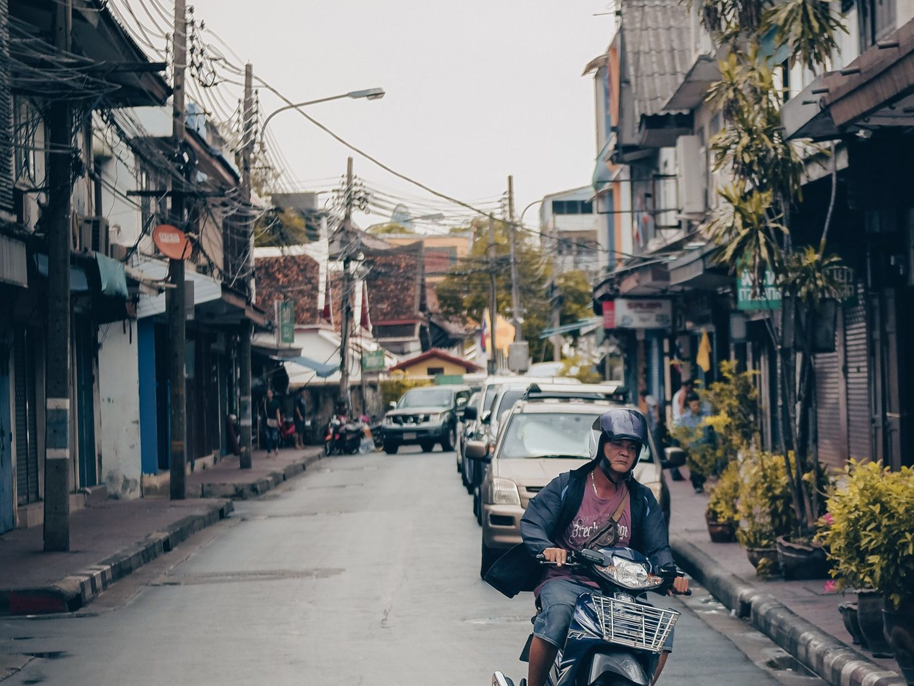
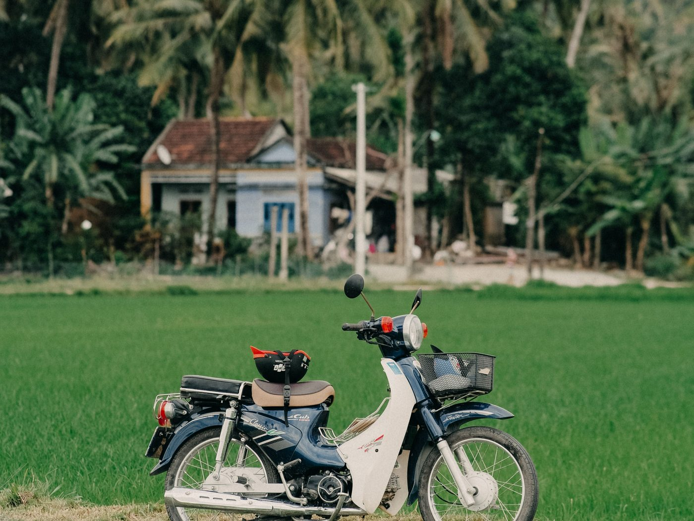

Байк на зимовку в Нячанге: купить, откатать сезон, продать
Зимовка в Нячанге — это три, четыре, шесть месяцев. Срок, на котором аренда перестаёт быть удобной, а покупка перестаёт быть авантюрой. Здесь — простой расчёт в донгах и понятный сценарий: купить, откатать сезон, продать перед вылетом.
Считаем аренду
Аренда скутера в Нячанге считается помесячно, ставки зависят от сезона, модели и того, насколько долго вы берёте. Посчитайте свой вариант сами по формуле: месячная ставка × число месяцев + депозит. К этому добавьте два пункта, о которых обычно забывают:
- Депозит — он замораживается на весь срок, и его возврат зависит от состояния байка при сдаче.
- Ответственность за повреждения. Царапина на чужом байке — это ваши деньги при возврате, и оценивает её владелец.
Ещё один нюанс арендованного транспорта: вы не выбираете, на чём ездите. Дали тот байк, который свободен, — и каждый месяц он может быть другим.
Считаем покупку
Наш вариант — свой быстрый байк 50сс из наличия: Blue Card (cà vẹt) с объёмом 50cc, доработка (задняя звезда, цепь, тормоза), замена масла, проверка, обкатка, папка байка и выдача в Нячанге. Цену по конкретному байку уточняйте в WhatsApp или Telegram.
Дальше — только текущие расходы: бензин, иногда масло, изредка мелкий ремонт. Сколько уходит на содержание, разобрано отдельно: содержание байка и расход топлива 50сс.

Третья часть расчёта, про которую забывают
Арендные деньги уходят навсегда. Байк, который вы купили, в конце сезона продаётся — и часть суммы возвращается. Именно поэтому честное сравнение выглядит так:
Аренда: ставка × месяцы = потрачено, на выходе ноль.
Покупка: цена байка − сумма, за которую вы его продали = реальная стоимость сезона.
Вторичную цену заранее не назовёт никто, и обещать её мы не станем: она зависит от модели, состояния, пробега и, главное, от документов. Но механика простая — чем дольше сезон, тем сильнее покупка выигрывает, потому что аренда растёт каждый месяц, а стоимость байка падает медленно.
Отдельно и честно: обратного выкупа мы не делаем. Мы не забираем байк назад и не обещаем фиксированный процент. Продаёте вы его сами — как это делается, разобрано в статье как продать байк 50сс в Нячанге перед отъездом.

Почему именно 50сс для зимовки
Для транспорта с объёмом до 50 см³ во Вьетнаме не требуется мотоциклетная категория прав — это главная причина выбора. Без международного удостоверения с нужной категорией 110-кубовый скутер превращается в постоянный риск, а 50сс — нет.
Оговорка, которую мы проговариваем всегда: объём ≤50 см³ в техпаспорте — нужное условие, но не освобождение от всего остального. Правила движения, шлем, возраст и условия вашего пребывания в стране соблюдать всё равно нужно, а актуальные требования стоит проверять на момент покупки. Подробно — про права на 50сс.
Сценарий зимовки целиком
- Первая неделя. Выбираете байк из наличия, смотрите живьём (юг Нячанга, 9:00–21:00), проверяете Blue Card, оплачиваете и уезжаете на своём.
- Сезон. Ездите. Меняете масло по пробегу, следите за шинами и тормозами, паркуете с замком. Полезное на старте — первая неделя с байком.
- За 2–3 недели до вылета. Мойка, свежее масло, честные фото, объявление сразу в двух-трёх каналах.
- Передача. Деньги — до передачи оригинала Blue Card, не после.
Кому покупка не подойдёт
Если вы в Нячанге на две-три недели — берите аренду, покупка не успеет себя оправдать. Если вы вообще не планируете ездить сами и обходитесь такси — тем более. Покупка имеет смысл от примерно двух-трёх месяцев и при условии, что вы готовы в конце потратить пару недель на продажу.
Коротко
На сезон 3–6 месяцев свой байк 50сс с чистыми документами — это не расход, а частично возвратная покупка: часть суммы возвращается при перепродаже, а всё это время вы ездите на своём и не зависите от прокатчика. Смотрите что сейчас в наличии и сравните с арендой в разборе аренда или покупка.